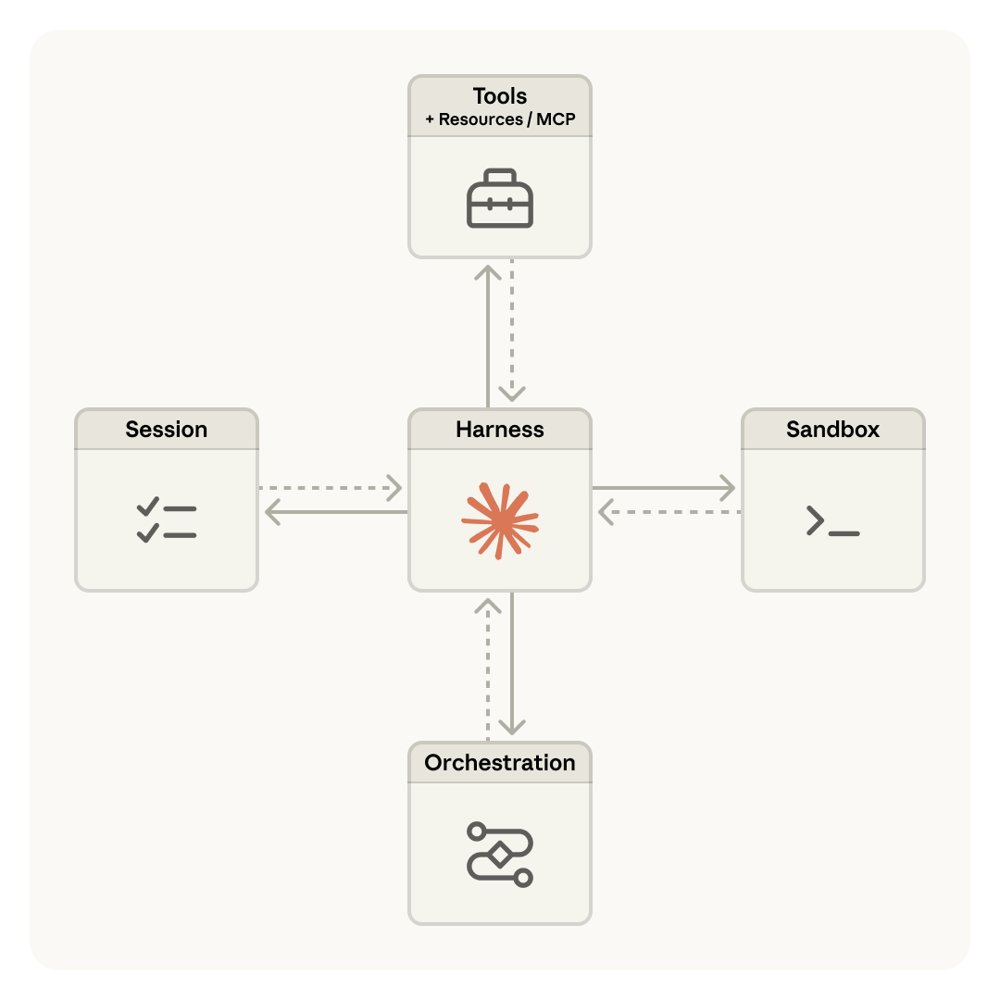
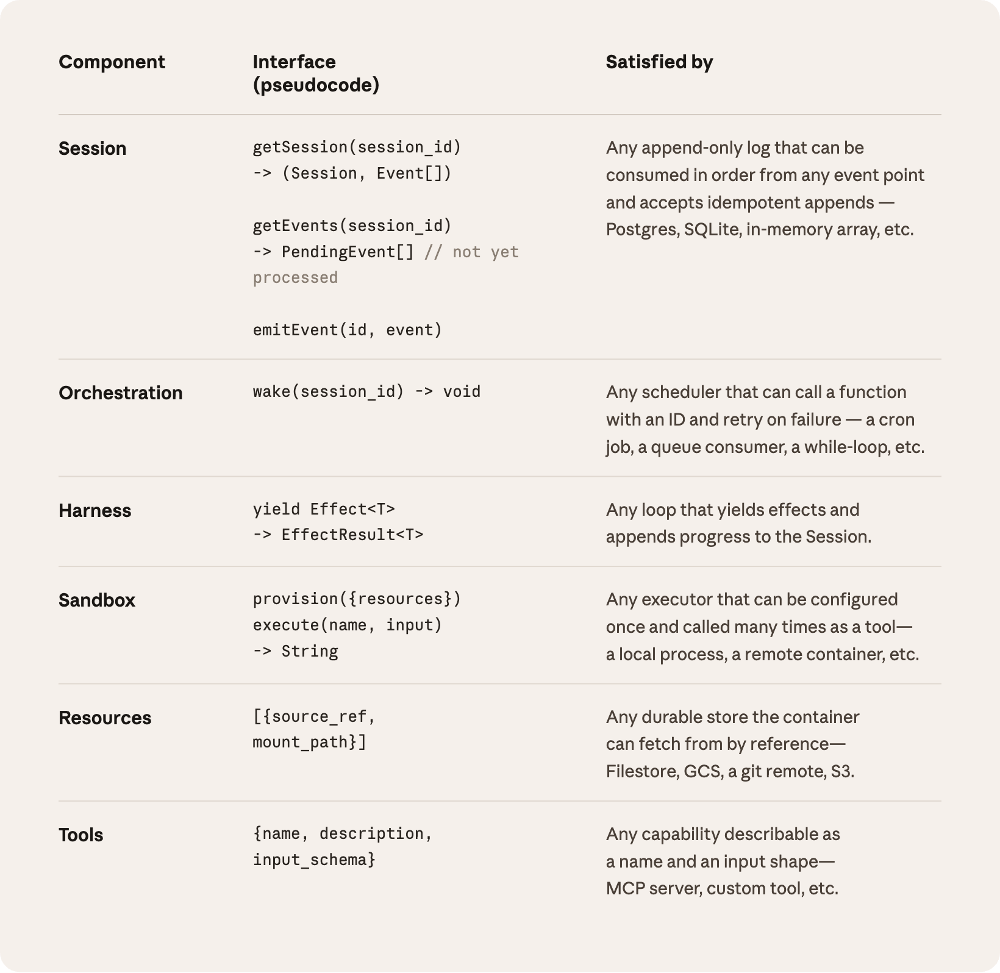
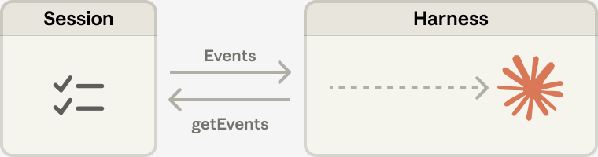
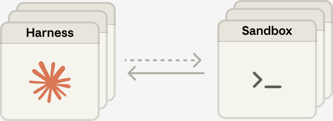

Anthropic이 에이전트의 추론과 실행을 분리하는 설계를 공개했습니다.
세션, 하네스, 샌드박스를 독립시켜 응답 지연을 최대 90% 줄였습니다.
안정된 인터페이스를 설계하면 에이전트는 수평 확장이 가능합니다.
AI 에이전트를 컨테이너 하나에 넣고 확장 가능하다고 합니까?
컨테이너가 죽으면 세션도 함께 사라집니다.
AI 에이전트가 작업 중 멈추면 어떻게 됩니까? 대부분의 기업에서 진행 중인 작업이 통째로 사라집니다. 추론과 실행이 같은 공간에 묶여 있기 때문입니다. Anthropic이 이 구조적 문제의 해법을 공개했습니다(Martin et al., 2026).
기업이 AI 에이전트를 실무에 배치하고 있습니다. 대부분 컨테이너 하나에 모든 기능을 넣습니다. 컨테이너가 멈추면 세션이 유실됩니다. Anthropic이 이 문제의 해법을 공개했습니다(Martin et al., 2026). 에이전트 확장을 준비하는 기업에 적용할 수 있습니다.
첫째, 에이전트를 세 부분으로 분리합니다. 세션(작업 기록), 하네스(추론 루프), 샌드박스(코드 실행)입니다. 기존에는 세 요소가 컨테이너 하나에 묶여 있었습니다. Anthropic은 이를 "반려동물 관리"에 비유합니다(Martin et al., 2026). 에이전트를 도입하는 기업이 먼저 검토할 설계 결정입니다.
둘째, 추론 루프를 컨테이너 밖으로 꺼냅니다. 하네스는 표준 호출로 샌드박스를 사용합니다. 이름과 입력을 보내면 결과를 돌려받는 단순한 형식입니다(Martin et al., 2026). 컨테이너는 교체 가능한 자원이 됩니다. 초기 고객의 네트워크 환경 통합 문제도 이 분리로 해소됐습니다(Martin et al., 2026).

셋째, 세션을 외부에 저장합니다. 하네스가 죽어도 세션은 살아 있습니다. 새 하네스가 세션 ID로 이벤트 기록을 가져옵니다. 중단 지점부터 작업을 재개합니다(Martin et al., 2026). 원본 이벤트 로그가 그대로 남아, 맥락을 요약하거나 삭제할 필요가 없습니다.

넷째, 인증 정보를 실행 환경 밖에 둡니다. 에이전트가 코드를 생성하는 샌드박스에 인증 정보를 넣지 않습니다. Git 토큰은 초기화 시에만 사용합니다. OAuth 토큰은 보안 저장소에서 프록시로 접근합니다(Martin et al., 2026). 에이전트가 생성한 코드에 인증 정보가 노출되면 보안 사고입니다.

다섯째, 응답 지연이 크게 줄었습니다. 분리 후 p50 응답 시간이 60% 감소했습니다. p95 응답 시간은 90% 이상 줄었습니다(Martin et al., 2026). 운영체제가 하드웨어를 추상화했듯이, 안정된 인터페이스가 구현 변화를 흡수합니다. 하네스가 상태를 갖지 않아 수평 확장이 가능합니다.
| 항목 | 기존 (결합) | 신규 (분리) | 효과 |
|---|---|---|---|
| p50 응답 시간 | 기준 | 60% 감소 | 체감 속도 향상 |
| p95 응답 시간 | 기준 | 90%+ 감소 | 최악 지연 제거 |
| 장애 복구 | 세션 유실 | 자동 재개 | 작업 연속성 |
| 확장 방식 | 수직 확장 | 수평 확장 | 비용 효율 |
| 보안 경계 | 동일 환경 | 분리 격리 | 인증 정보 보호 |
출처: Martin, Cemaj, Cohen (2026), Anthropic Engineering.

분리하지 않으면 두 가지 비용이 발생합니다. 첫째, 응답이 느립니다. 분리 후 p95 응답 ���간이 90% 이상 줄었습니다(Martin et al., 2026). 둘째, 작업이 유실됩니다. 컨테이너 장애 시 세션 복구가 불가능합니다.
개발팀에 세 가지를 확인합니다. (1) 에이전트가 멈추면 작업 기록이 남는가? (2) 추론과 코드 실행이 같은 환경에 있는가? (3) 인증 정보가 코드 실행 공간에 노출되는가? 세 질문에 하나라도 "예"가 나오면 아키텍처 분리를 검토합니다. (30분, 개발팀 미팅 1건)
에이전트 작업 기록이 프로세스 내부에만 있는지 점검합니다. 외부 데이터베이스나 이벤트 로그에 저장하는지 개발팀에 확인합니다. 외부 저장 중이면 장애 복구가 가능합니다. 아니라면 분리 작업의 우선순위가 높습니다. (15분, 개발팀 질문 1건)
AI 에이전트가 API 키나 인증 토큰에 직접 접근하는지 확인합니다. Claude에 "우리 에이전트의 인증 정보 관리 방식을 점검하는 체크리스트를 만들어줘"라고 요청합니다. (30분, 보안 체크리스트 작성)
Anthropic 자사 서비스 기준입니다. Managed Agents는 Anthropic의 호스팅 서비스입니다. 자사 인프라에 최적화된 설계입니다. 기업 환경에 따라 수치가 달라질 수 있습니다.
분산 아키텍처는 복잡도를 높입니다. 구성 요소가 분리되면 디버깅이 어려워집니다. 소규모 팀에서는 오히려 운영 부담이 늘 수 있습니다.
에이전트 1~2개 수준에서는 과잉 설계입니다. 이 아키텍처는 대규모 운영을 전제합니다. 에이전트 수가 적으면 단일 환경이 효율적입니다.
맥락 관리의 새로운 과제가 생깁니다. 세션을 외부에 저장하면 맥락 동기화 문제가 발생합니다. 이벤트 로그 크기가 커지면 복구 시간도 늘어납니다.
AI 에이전트를 확장하려면 추론과 실행을 분리합니다. 안정된 인터페이스가 변하는 구현보다 오래갑니다.
하네스(Harness): AI 에이전트의 추론 루프입니다. AI 모델을 호출하고 도구 실행을 연결합니다.
샌드박스(Sandbox): 코드 실행 환경입니다. 외부와 격리된 안전한 공간에서 코드를 실행합니다.
세션(Session): 에이전트의 작업 기록입니다. 이벤트가 순서대로 기록되는 로그입니다.
수평 확장: 서버를 추가하여 처리 능력을 늘리는 방법입니다. 서버 한 대를 키우는 수직 확장과 구분됩니다.
p50/p95 응답 시간: 전체 요청 중 50%/95%가 이 시간 안에 응답하는 기준입니다. p95가 높으면 최악 대기 시간이 긴 것입니다.
- Martin, L., Cemaj, G., & Cohen, M. (2026, 4월). Scaling Managed Agents: Decoupling the brain from the hands [Article]. Anthropic Engineering. https://www.anthropic.com/engineering/managed-agents